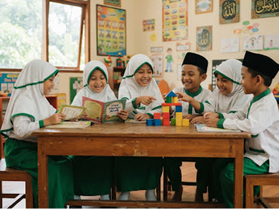

Pembiasaan Ibadah
Doa harian, hafalan surat pendek, shalat dhuha bersama, dan wudhu mandiri setiap hari.
Pondasi Karakter check_circle
Pendidikan anak usia dini berbasis nilai-nilai Islam ahlussunnah wal jama'ah dengan metode belajar aktif, menyenangkan, dan berpusat pada tumbuh kembang ananda tercinta.

100% Guru Tersertifikasi
Lulusan Sarjana PGPAUD & Tahfidz
120+
Siswa Aktif
Terbagi kelas A & B
12
Ustadzah & Guru
Sarjana PAUD & Tahfidz
15+
Tahun Berdiri
Mengabdi sejak 2009
24+
Kegiatan Tematik
Manasik haji, outing, pentas
Komitmen kami menghadirkan pondasi akidah dan karakter mulia sejak dini dengan nuansa santun dan ramah anak.
Doa harian, hafalan surat pendek, shalat dhuha bersama, dan wudhu mandiri setiap hari.
Pondasi Karakter check_circle
Metode sentra & bermain edukatif yang menstimulasi motorik, kognitif, dan sosial emosional anak tanpa paksaan.
Metode Sentra check_circle
Pendidik berlatar belakang PGPAUD yang sabar, telaten, berakhlak mulia, dan memahami psikologi anak usia dini.
Penuh Kasih check_circle
Ruang kelas ber-AC, area bermain outdoor berstandar aman, pantauan CCTV, dan sanitasi bersih ramah balita.
Standar Bersih check_circle

Penuh Kasih
Ramah Tumbuh Kembang
Mewujudkan tunas bangsa yang beriman, bertakwa, kreatif, cerdas, dan mandiri dengan landasan Qurani.
Menerapkan compassionate learning tanpa hukuman fisik, mengedepankan apresiasi dan dialog bersahabat.
Menyajikan pembelajaran seimbang antara ilmu agama, kesiapan calistung dini, serta kecerdasan kinestetik.
Target hafalan Juz 30 (An-Nas s.d. Ad-Dhuha) dengan metode talaqqi yang ceria, mudah diingat, dan menyenangkan bagi anak.
Bimbingan membaca Al-Qur'an secara privat intensif sesuai tahapan kemampuan masing-masing anak tanpa membuat jenuh.
Praktik manasik haji anak, shalat fardhu & dhuha, doa makan, tidur, dan adab keseharian kepada orang tua dan sesama.
Melukis, sensory play, bercerita kisah Nabi (storytelling), gerak & lagu islami, serta panggung pentas seni tahunan santri.
 Kegiatan
Kegiatan
12 Mei 2025
Santriwan dan santriwati antusias mengenakan pakaian ihram dan mempraktikkan rukun haji dengan penuh kegembiraan.
Baca Selengkapnya → Edukasi
Edukasi
28 April 2025
Melatih motorik dan rasa syukur anak dengan menyentuh alam, menanam bibit, dan berinteraksi...
Baca Selengkapnya → Pengumuman
Pengumuman
15 April 2025
Pertemuan wali santri bersama psikolog anak untuk memperkuat sinergi pengasuhan di rumah dan...
Baca Selengkapnya →Kepercayaan dan kebahagiaan para orang tua adalah amanah terbaik yang selalu kami jaga.
"Alhamdulillah putri saya baru 1 semester sudah hafal belasan surat pendek dan terbiasa membaca doa makan sendiri di rumah. Gurunya sangat sabar dan penyayang."
Bunda Siti Rahmawati
Ibunda dari Aisyah, Kelas B
"Fasilitasnya sangat bersih dan aman. Anak saya yang tadinya pemalu sekarang jadi aktif dan percaya diri. Setiap pagi selalu semangat berangkat ke sekolah!"
Ayah Dedi Prasetyo
Ayahanda dari Fatih, Kelas A
"Pilihan terbaik untuk sekolah TK Islam di Cikuya. Komunikasi antara guru dan wali santri sangat terbuka, laporan perkembangan anak rutin dan transparan."
Bunda Nurul Hidayah
Ibunda dari Rayyan, Kelas B
Daftarkan putra-putri tercinta sekarang untuk Tahun Ajaran 2025/2026. Kuota terbatas 60 santri untuk menjaga rasio guru dan murid yang ideal demi perhatian optimal.
Daftar Sekarang (Formulir Online)Atau unduh Brosur PPDB & Rincian Biaya (PDF) • Konsultasi langsung via WhatsApp: 0812-3456-7890